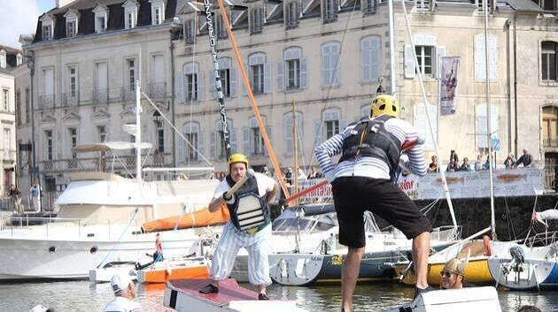

Chants de
joutes nautiquesLa voix, le hautbois et le tambour au bord du Canal royal


⟹ Musique ⟸
À Sète et autour du bassin de Thau, les joutes nautiques languedociennes sont indissociables d'un paysage sonore. Hautbois languedociens, tambours, airs de marche, refrains populaires et chants en français ou en occitan accompagnent les cortèges, l'embarquement, le salut des barques, les affrontements sur la tintaine et les réjouissances qui suivent le tournoi.
La tradition des joutes est attestée à Sète dès la fondation du port au XVIIe siècle et s'est progressivement organisée en sociétés. La fête de la Saint-Louis, à la fin du mois d'août, est devenue son grand rendez-vous. La ville concentre encore plusieurs sociétés de jouteurs et demeure l'un des centres majeurs de la méthode languedocienne.
La musique ne constitue donc pas un simple accompagnement décoratif : elle ordonne les temps de la fête, soutient les rameurs, annonce les séquences rituelles et crée une continuité entre les jouteurs, les musiciens et le public massé le long du Canal royal.
Les chants associés aux joutes appartiennent à un ensemble plus vaste de chants de quai, de mer, de fête et d'identité locale. Certains textes racontent directement l'affrontement des jouteurs ; d'autres célèbrent Sète, l'étang de Thau, les barques, la jeunesse ou le pays d'oc.
Les archives occitanes conservent notamment La cançon de las ajustas — « la chanson des joutes » — rattachée à une tradition remontant à l'opéra de Frontignan de Nicolas Fizes (1678). Des versions recueillies au XXe siècle évoquent le chef de jeunesse, les pavillons, les jouteurs, les tambourineurs et le hautbois.

Dans les pratiques actuelles, ce fonds local voisine avec de grands chants occitans comme Se Canta ou La Coupo Santo, ainsi qu'avec des créations liées au monde maritime sétois. La transmission reste largement collective : on apprend les refrains dans les familles, les associations, les fêtes et les groupes de chants marins.
« Pavillons, jouteurs, et puis les tambourineurs, sans oublier le hautbois… »
— Adaptation française d'un chant traditionnel de joutes recueilli à SèteAvant le tournoi, les musiciens accompagnent traditionnellement le départ depuis les sièges des sociétés puis le défilé général. Sur l'eau, la musique ponctue le salut des barques et soutient le mouvement des rameurs. Le Canal royal devient ainsi une scène où gestes sportifs, cérémonial et musique se répondent.
Après les passes, la convivialité continue. Les « troisièmes mi-temps » donnent place aux chansons, aux improvisations et aux galéjades, souvent bâties sur des airs connus et adaptées avec humour à l'actualité locale ou aux protagonistes de la journée.
Cette souplesse est une caractéristique du patrimoine oral : le répertoire n'est jamais complètement figé. Il vit de variantes, de reprises, de détournements et de créations nouvelles, tout en conservant des motifs et des airs reconnus par la communauté.
Les joutes languedociennes sont documentées par l'Inventaire du patrimoine culturel immatériel en France. La musique qui leur est associée bénéficie de la vitalité des sociétés de jouteurs, des groupes de hautbois et tambours, des associations maritimes et des événements consacrés au patrimoine portuaire.
Le Conservatoire à rayonnement intercommunal Manitas de Plata participe à l'apprentissage d'instruments régionaux, notamment du hautbois languedocien. Des ensembles comme Chiviraseta ou les Grailhes de Thau perpétuent parallèlement ce répertoire lors de fêtes et de rencontres patrimoniales.
Le festival Escale à Sète contribue à cette transmission en faisant dialoguer joutes, bateaux traditionnels, chants marins et musiques des ports. Le chant demeure ainsi un trait d'union entre patrimoine nautique, langue occitane et identité sétoise.
La documentation disponible permet d’aller au-delà de l’ambiance festive et de suivre précisément la place de la musique dans le rituel des joutes. La fiche nationale du patrimoine culturel immatériel souligne que le jeu musical constitue un caractère durable de la joute languedocienne. Le répertoire pour hautbois et tambour a par ailleurs fait l’objet d’un travail spécifique de collecte, de notation et d’édition.
Philippe Carcassés et Alain Charrié, La musique des joutes languedociennes / Musica de las ajustas per autbòi e tamborinet, présentent les airs dans l’ordre de leur usage : parade, embarquement, airs de barque, retour du vainqueur, remise des prix, « Descente de la Bourse » et morceaux d’agrément. Cet ouvrage bilingue français-occitan constitue une référence particulièrement utile pour documenter le patrimoine musical sétois.
Pour le répertoire chanté, la base ethnographique RaddO conserve une notice de La cançon de las ajustas, en occitan, donnée comme extraite de l’Opéra de Frontignan de Nicolas Fizes (1678). Occitanica propose également des vidéoguides sur les joutes sétoises, utiles pour replacer cette tradition dans l’histoire de Sète et de la Saint-Louis.
Bibliographie indicative : Patrick Bertonèche, Joutes nautiques en France, Le Chasse-Marée/Armen, 1998 ; Jérôme Pruneau, Les Joutes languedociennes, ethnologie d’un « sport traditionnel », L’Harmattan, 2003 ; Philippe Carcassés & Alain Charrié, La musique des joutes languedociennes, Cèucle occitan setòri / CORDAE-La Talvera.